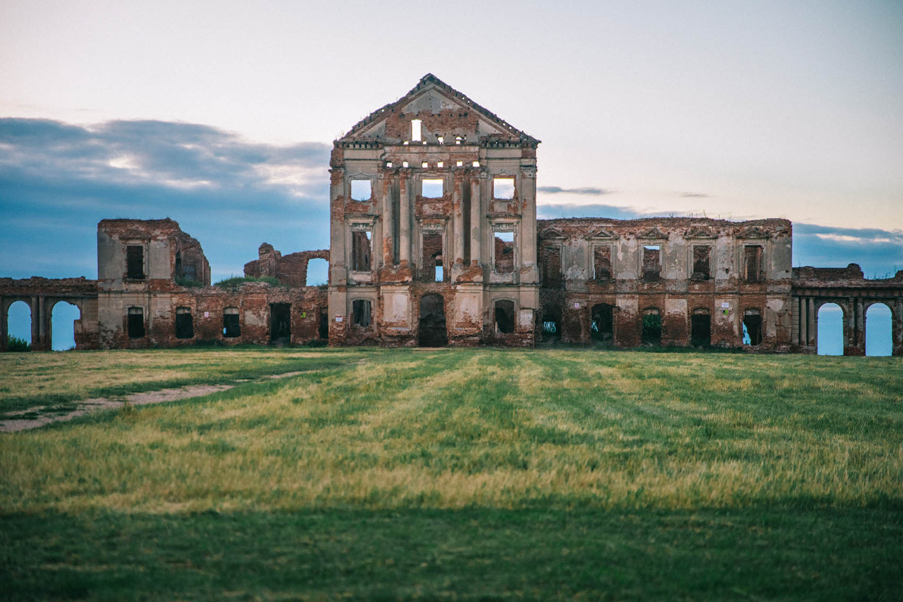
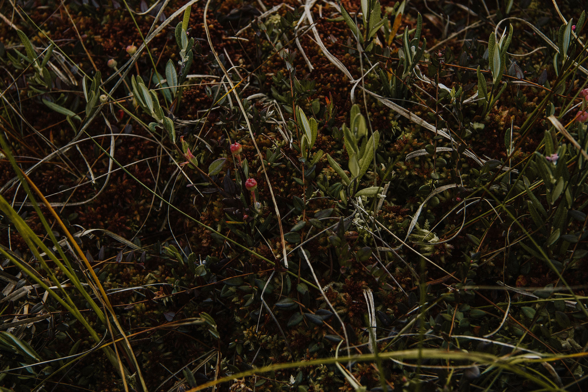
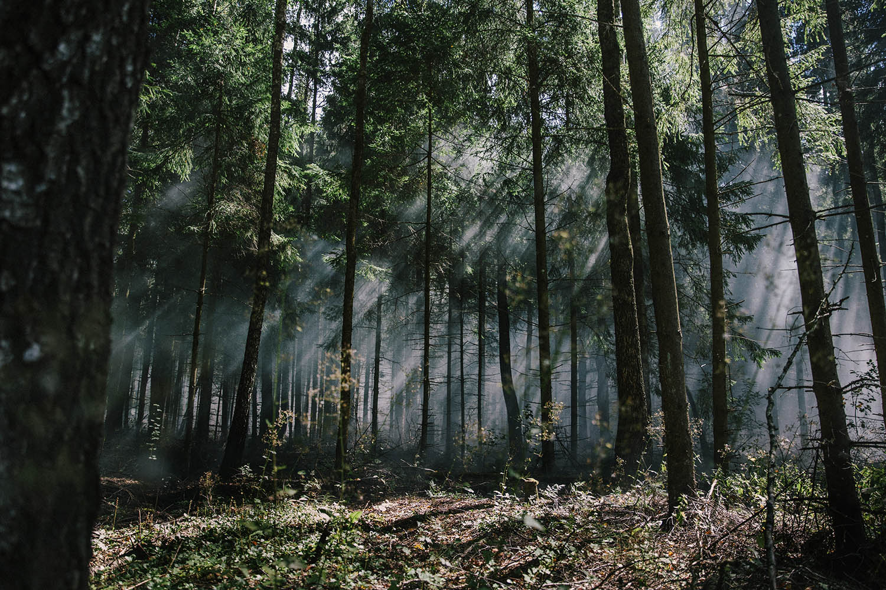

Sapieha palace complex
Ruzhany, Pruzhany district
A shipping canal built in the 19th century to create a route from the Black Sea
to the Baltic. There are only two steep engineering structures, thought out so cunningly, long ago,
and preserved practically in their original form - in Great Britain and Sweden. The length of the
canal is 101 km, 22 of them are on the territory of Belarus in the border zone.
.jpg)
Borisoglebskaya church
Grodno
The Borisoglebskaya or Kolozhskaya church appeared on a pagan heap near the
Castle Hill in Grodno back in the 11th century - this is one of the few buildings of the period of
Ancient Rus in Belarus, however, notably rebuilt. The church is not plastered on the outside, and
therefore you can look at all the engineering solutions of the builders of that time. The church
stands on the steep bank of the Nemunas - and the view from there is magical.
.jpg)
Slonim synagogue
Slonim
Baroque synagogue from 1642, one of the oldest in the country. The synagogue was
badly damaged during the war of 1812, but was quickly rebuilt - the Jewish community in Slonim was
then considered one of the most powerful in the country. At the end of the 19th century, 21 synagogues
operated in the city, and more than 70% of the residents were Jews. In 2000, the building was returned
to the believers, but no restoration work was carried out. The building is currently up for sale.

Olmanskie swamps
Stolin district
These bogs occupy 75% of the area of the Stolin district - the only complex of
upland, transitional and lowland bogs that has survived in our natural state. Ecologists cannot get
enough of: 687 plant species, 151 bird species (25 from the Red Book) and 26 mammal species live here.
Interestingly, in the 60s of the last century, there was an aviation training ground in Olmani, so
there are still unexploded shells and bombs in the swamps.

Bialowieza Forest
Brest region
The Belarusian reason for pride is the largest and oldest forest in Europe,
protected by UNESCO. Yes, there are bison in the wild here. Yes, you can even hunt them (if you have
enough conscience). Yes, it was here that the agreement on the collapse of the USSR was signed. Yes,
it is here that the Belarusian Santa Claus lives (his residence works even in the summer - but his
grandfather's suit is lightweight). Breathe in the relict air, cut it on a bicycle, feed the bison in
the aviary with bread from your hand, drive them to look at the Kamenetskaya Vezha, which is more than
700 years old.
.jpg)
Augustow Canal
Nemnovo, Grodno region
A navigable canal built in the 19th century to create a route from the Black Sea
to the Baltic. There are only two steep engineering structures, thought out so cunningly, long ago,
and preserved almost in their original form - in Great Britain and Sweden. The length of the canal is
101 km, 22 of them are on the territory of Belarus in the border zone. Locks, drawbridges, columns -
it's amazing how smoothly everything works. You can take a ride on the Neman motor ship, walk along
the canal, go to the canal museum, kayak, look at the surviving manor in Svyatsk, created in the 18th
century by the Italian architect Giuseppe de Sacco.